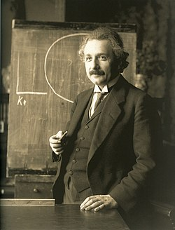

Albert einstein
Grande fisico quantico
Albert Einstein (Ulm, 14 de março de 1879 — Princeton, 18 de abril de 1955) foi um físico teórico alemão que
desenvolveu a teoria da relatividade geral, um dos pilares da física moderna ao lado da mecânica quântica.
Embora mais conhecido por sua fórmula de equivalência massa-energia, E = mc² — que foi chamada de "a equação
mais famosa do mundo" —, foi laureado com o Prêmio Nobel de Física de 1921 "por suas contribuições à física
teórica" e, especialmente, por sua descoberta da lei do efeito fotoelétrico, que foi fundamental no
estabelecimento da teoria quântica.

Grande fisico quantico
Alguns marcos do seu trabalho
-
1916: Publicou um artigo sobre a teoria da relatividade geral.
-
1917: aplicou a teoria da relatividade geral para modelar a estrutura do universo como um todo. Suas
obras renderam-lhe o status de celebridade mundial enquanto tornava-se uma nova figura na história
da
humanidade, recebendo prêmios internacionais e sendo convidado de chefes de estado e autoridades.
-
1999: foi eleito por 100 físicos renomados o mais memorável físico de todos os tempos. No mesmo ano,
a
revista TIME, em uma compilação com as pessoas mais importantes e influentes, classificou-o a pessoa
do
século XX.